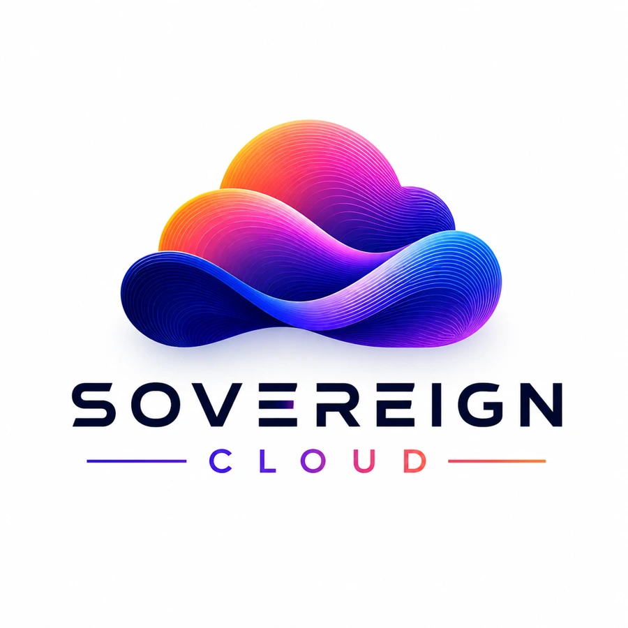

Secure infrastructure
Build on a protected environment with access controls and security practices.
 Let’s talk ↗
Let’s talk ↗A managed cloud approach built around security, simplicity and the needs of growing SMEs.
Discuss your cloud requirements ↗
Build on a protected environment with access controls and security practices.
Choose an environment that fits your workload and operational needs.
Adapt infrastructure as demand and the business grow.
Discuss data location, access and governance requirements as part of the design.
Define your services and costs clearly before committing.
Work with a team that understands your environment and supports ongoing operations.
Establish the security, access and governance requirements.
Set up a managed environment with clear operational responsibilities.
Review capacity and adapt services as your business evolves.
↗ Clearer costs and operational responsibilities
↗ A simpler approach to management
↗ Greater flexibility as your workloads evolve
Data location, service levels, capacity and compliance requirements are confirmed for the selected deployment.Start with a free 30-minute discovery conversation.